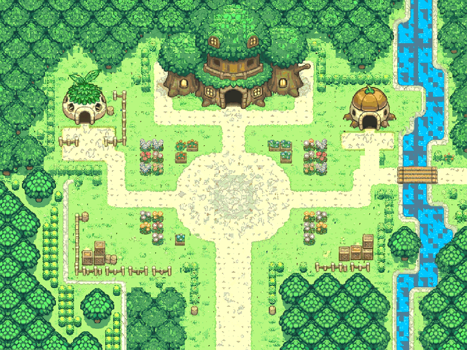

Village arboricole de guilde — concept généré
Imagegen avec composition villageoise et fleurs inspirées des références Halcyon; aperçu ramené à 768×576, palette T00P01, grille 96×72 de 8px.

Image générée originale 1200×896Ouvrir les calques PMDO canoniques ZGT2Télécharger l'ORA 8 calquesTélécharger le pack PMDO

ZGT4 est une image conceptuelle: le redimensionnement et la palette T00P01 ne constituent pas une extraction exacte des textures. La version multicalque avec cellules canoniques 8×8 est ZGT2.